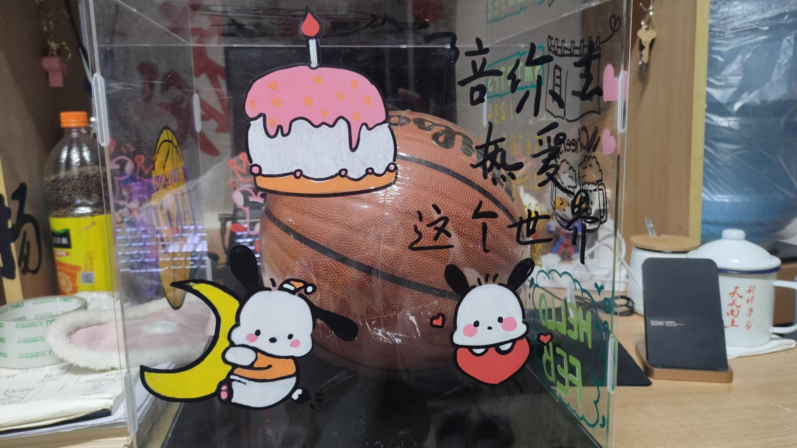
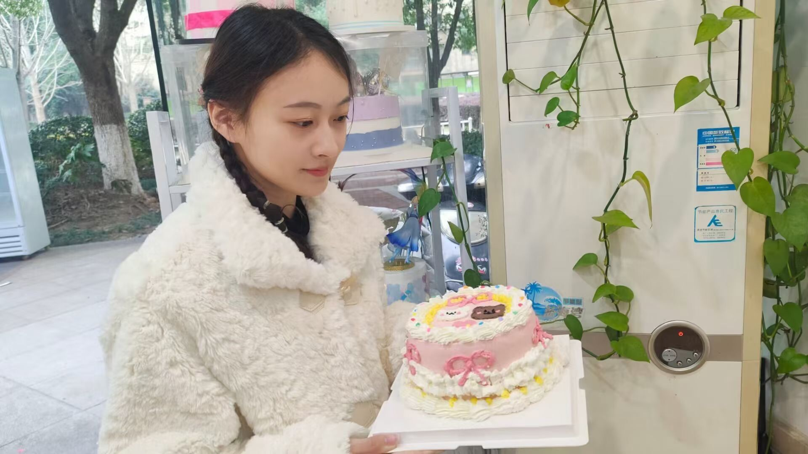
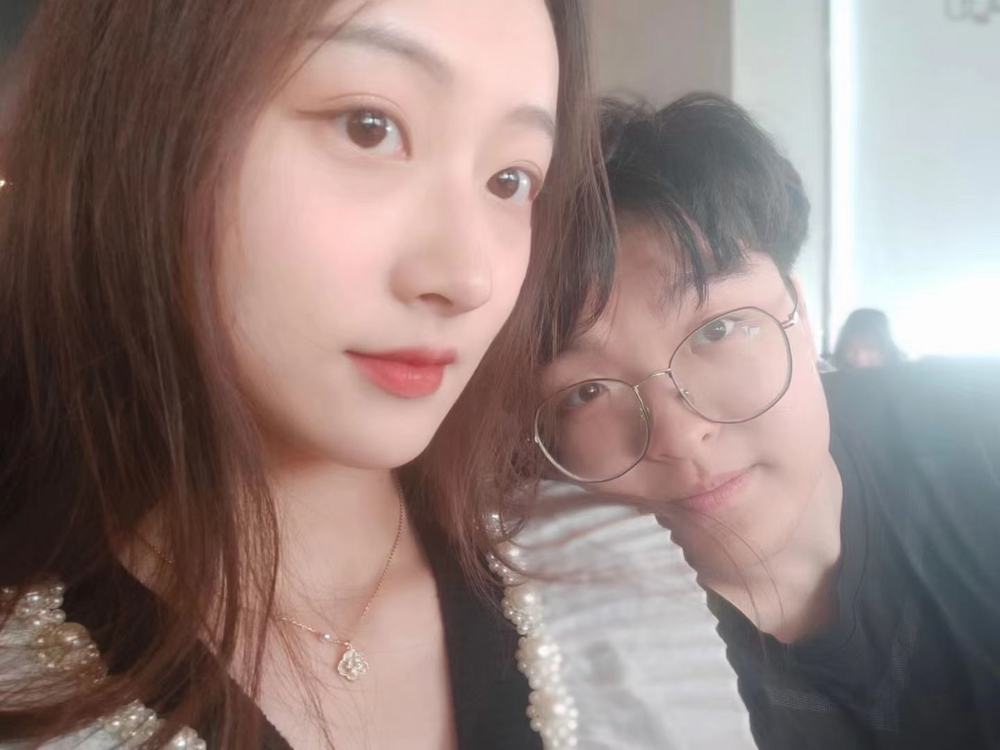
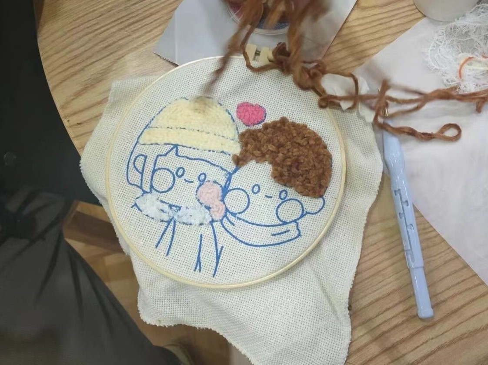

小狗精选照片 嘿嘿嘿 熊熊公主送给狗子的篮球礼盒 有熊熊公主的精彩手绘 嘻嘻嘻 是小狗收到过的最好的生日礼物 小狗非常滴喜欢 小狗生日的第二天还和熊熊公主一起去制作了小蛋糕 小狗笨手笨脚的 不太会 但是和熊熊公主一起还是做出了可爱的小蛋糕 更重要的是和熊熊公主一起做非常开心 期待下一次和熊熊公主一起做小饼干什么滴
下方的两张是一周年的时候拍滴 熊熊公主和小狗保安为数不多的合照 一年一张哈哈哈哈哈 以后想和熊熊公主拍更多滴合照 （主要是狗不咋上镜 不过可以给熊熊公主当当陪衬也是极好的）俺们还去南长街搞了小手工哩 只搞了一半 时间太久就先放在那里哩 后来一直比较忙也没有去做 是一件一定要去补上的事情